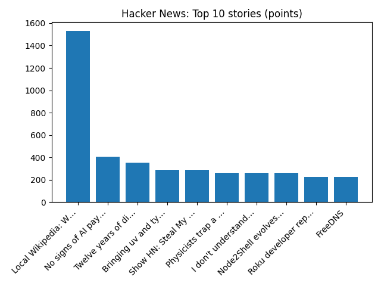

Archdiocese of New York agrees to $800 million settlement over sexual abuse claims
NPR — Top Stories
YOUR DAILY INTELLIGENCE BRIEF · 2026-10-24
Global watch: Archdiocese of New York agrees to $800 million settlement over sexual abuse claims, Trains cancelled and road warnings as Storm Boelo sweeps into Scotland.
Northern Virginia: The Burn celebrates 10th anniversary with books for kids fundraiser - The Burn, ~$!【LIVE@STREAMs】 Northern Virginia HomeSchool vs Harvest Covenant 𝐋𝐈𝐕𝐄 ＯＮ Ｔｖ Ｃｈａｎｎｅｌ 23 October 2026 - FC東京オフィシャルホームページ.

Global coverage includes Archdiocese of New York agrees to $800 million settlement over sexual abuse claims; Trains cancelled and road warnings as Storm Boelo sweeps into Scotland; Trump administration demands county election officials identify noncitizen voters in California - Reuters. Local coverage includes The Burn celebrates 10th anniversary with books for kids fundraiser - The Burn; ~$!【LIVE@STREAMs】 Northern Virginia HomeSchool vs Harvest Covenant 𝐋𝐈𝐕𝐄 ＯＮ Ｔｖ Ｃｈａｎｎｅｌ 23 October 2026 - FC東京オフィシャルホームページ.

Ravens & Lullabies
Ravens & Lullabies is a studio album by Gordon Giltrap and Oliver Wakeman. Giltrap also worked with Oliver's father Rick Wakeman on the album From Brush and Stone three years prior.
https://en.wikipedia.org/wiki/Ravens_%26_Lullabies
Runs so far today: 3